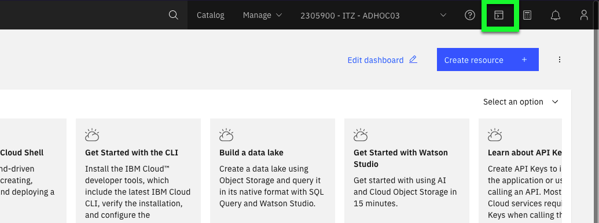

Manage regulated content
For this exercise, the IBM Cloud Shell will be used so no additional software is required. IBM Cloud Shell gives users complete control of their cloud resources, applications and infrastructure, from any web browser. IBM Cloud Shell provides pre-authenticated access to the latest tools and programming languages for cloud-based development, deployment and management of services and applications — all in a secure shell. IBM Cloud Shell is instantly accessible from the IBM Cloud portal.
The directions below do not specify to check IBM Cloud Activity Tracker, but feel free to validate all actions that access data objects (i.e. downloading objects, uploading objects) is tracked by reviewing the Activity Tracker events.
Follow the seps below to learn more about the COS command line interfaces.
- Change to the ITZ - ADHOC03 account using the drop-down switcher, as shown in the GIF below.

Tip
If the browser window is narrow, this icon:  may appear instead of the current account name as shown in the screen capture above.
may appear instead of the current account name as shown in the screen capture above.
- Click the IBM Cloud Shell icon
 .
.

The next steps are performed in using the IBM Cloud Shell window that was just opened.
- In the top-right corner of the IBM Cloud Shell window is a square icon with an "up" arrow. Click this button to upload a file — upload the SSH key downloaded earlier.
In this chapter, a similar scenario as seen in Part 7 will be used where files will be uploaded, retention periods set, and attempts to delete the objects will be made. To facilite the scenario, a script is provided that will automatically download the 6 image files to the IBM Cloud Shell environment.
Important
Be sure to utilize the demonstration guides copy  icon to avoid typographical errors in executing commands.
icon to avoid typographical errors in executing commands.
- Download the script to download the images files.
wget https://raw.githubusercontent.com/IBM/SalesEnablement-COS-L3/main/docs/includes/downloadImageFiles.bash
- Execute the script to download the images files, and when prompted, enter a unique prefix to use in the file names (e.g. arj123).
- Verify the files now exist in the IBM Cloud Shell environment.
Example output
arj123-check1.jpg arj123-check2.jpg arj123-check3.jpg arj123-check4.jpg arj123-check5.jpg arj123-check6.jpg
Next, in order to use the COS CLIs, a few configuration steps must be completed.
- Set the COS region to us-south.
Example output
OK
Successfully saved default region. The program will look for buckets in the region us-south.
If the command above failed...
Occasionally, when creating the IBM Cloud Shell, the account may not be properly set for the shell instance. Verify the Current account shown in top right corner of the window is set to 2305900 - ITZ - ADHOC03. If it is not properly set, close the current IBM Cloud Shell browser tab, repeat Step 1, wait a few seconds, and then continue with next steps if the Current account is set to 2305900 - ITZ - ADHOC03.
- Retrieve the Cloud Resource Name (CRN) for the COS service instance COS-L3-service.
The -id flag returns just the CRN without additional information.
Example output
Retrieving service instance COS-L3-service in all resource groups under account ITZ - ADHOC03 as andrewj@us.ibm.com...
crn:v1:bluemix:public:cloud-object-storage:global:a/ba0e33c9056f470ca19de009747ec654:43d07b21-b680-4d31-9d51-178f582d630c:: 43d07b21-b680-4d31-9d51-178f582d630c
- Set Cloud Resource Name (CRN) for the COS CLI configuration to the COS service instance CRN.
In the next step, multiple commands are being executed. The command from the previous step is re-run and sent to the cut command to only return first part of the output. This is then added to the command to set the CRN for the COS configuration. The -q flag is added to suppress the headers from the first command.
ibmcloud cos config crn -crn `ibmcloud resource service-instance COS-L3-service -id -q | cut -f1 -d' '`
Example output
Saving new Service Instance ID...
OK
Successfully stored your service instance ID.
- Verify CRN and region are set in COS CLI configuration.
Example output
Key Value
Last Updated Monday, September 19 2022 at 21:24:46
Default Region us-south
Download Location /home/andrew/Downloads
CRN crn:v1:bluemix:public:cloud-object-storage:global:a/ba0e33c9056f470ca19de009747ec654:43d07b21-b680-4d31-9d51-178f582d630c::
AccessKeyID
SecretAccessKey
Authentication Method IAM
URL Style VHost
Service Endpoint
Notice in the output the Download Location is set to /home/
- Create a Downloads directory in the Cloud Shell environment.
- List all the buckets in the COS service instance.
Example output
OK
2 buckets found in your account:
Name Date Created
cos-l3-with-retention Sep 15, 2022 at 20:47:08
cos-l3-without-retention Sep 15, 2022 at 22:10:01
- List the storage class of the COS bucket.
Example output
OK
Details about bucket cos-l3-bucket-1:
Region: us-south
Class: Smart
- List the current content of a bucket.
Note, when executing the above command, the output will be similar to the example below but more objects may be listed as this is a shared environment.
Example output
OK
Found 2 objects in bucket 'cos-l3-with-retention':
Name Last Modified Object Size
arj123-check2.jpg Sep 19, 2022 at 17:28:14 101.41 KiB
arj123-check3.jpg Sep 19, 2022 at 20:07:32 83.08 KiB
- Upload a file to the COS bucket.
The next command has 2 parameters that will need to be modified prior to executing them. The -key option specifies the filename for the object in COS. The -body option specifies the local file to be uploaded. A unique -key must be specified. In the commands below, change arj123-check4.jpg to one of the files downloaded earlier. Be sure to select a file that has not already been uploaded.
Important
The command below must be modified to use the unique filename prefix specified earlier. The copy to clipboard button has been disabled as it automatically appends an enter key when pasted. Highlight the text and do a Ctrl+c, Cmd+c, or right click and select copy. Then paste and modify the command in IBM Cloud Shell.
ibmcloud cos object-put -bucket cos-l3-with-retention -key arj123-check4.jpg -body arj123-check4.jpg
The above command does not specify a retention period for the object. When this happens, the default value (recall this was set to 1 day for this bucket) is used. In order to specify a different value via the command line, the object content and key must be provided using Java Object Notation (JSON). Refer to the COS here for more details.
Example output
OK
Successfully uploaded object 'arj123-check4.jpg' to bucket 'cos-l3-with-retention'.
- Try uploading the same file again.
Tip
Cut, paste and modify the command below, or simply use the up arrow on the keyboard to bring up the last command.
ibmcloud cos object-put —bucket cos-l3-with-retention —key arj123-check4.jpg —body arj123-check4.jpg
Example output
FAILED
InvalidRequestForLegalReasons: The object is protected status code: 451, request id: b1a03a5d-6885-4114-957a-9dfdd8c57f8c, host id:
Why did this command fail?
Answer
Once an object is added to a bucket with a retention policy, it cannot be updated. Objects stored in COS with buckets with a retention policy are immutable.
- Try to download the object.
ibmcloud cos object-get -bucket cos-l3-with-retention -key arj123-check4.jpg
Example output
OK
Successfully downloaded 'arj123-check4.jpg' from bucket 'cos-l3-with-retention' 137.57 KiB downloaded.
- Verify the file was downloaded.
Example output
total 140
-rw-rw-r-- 1 andrewj user 140868 Sep 21 23:06 xyz123-check4.jpg
- Try to delete the object, enter y when prompted.
ibmcloud cos object-delete -bucket cos-l3-with-retention -key arj123-check4.jpg
Example output
WARNING: This will permanently delete the object 'arj123-check4.jpg' from the bucket 'cos-l3-with-retention'.
Are you sure you would like to continue? [y/N]> y
FAILED
InvalidRequestForLegalReasons: The object is protected
status code: 451, request id: accdd106-db7c-4f5e-8c6d-69f6811382f2, host id:
These are just some of the COS CLIs available. Remember, COS also provides APIs and support for Amazon Web Services S3 APIs. Feel free to explore more of the COS CLIs, but keep in mind, user IDs in this shared environment have limited access so many will result in permission denied messages. Use ibmcloud cos --help for a full listing of the COS CLIs.
Proceed to the next part to learn how the Identity and Access Management (IAM) permissions were set in this demonstration environment.